03: Python-based Preprocessing Routine Reproducibility
Dataset
0. Execution Environment Summary
[1]:
%%bash
bash .rep_exe_env_short.sh
=== Execution Start ===
Timestamp (UTC): 2026-09-29T21:35:01Z
Hostname: hww04
OS: Red Hat Enterprise Linux 8.8 (Ootpa)
=======================
1. Data Download
[2]:
%%bash
DATA_DIR="./data"
FILE_NAME="gbm"
SRC="https://www.ncbi.nlm.nih.gov/geo/download/?acc=GSE223065&format=file"
mkdir -p "$DATA_DIR/$FILE_NAME"
if compgen -G "$DATA_DIR/$FILE_NAME/*.gz" > /dev/null; then
echo "$FILE_NAME data already exists. Skipping download."
else
curl -fL \
-o "$DATA_DIR/$FILE_NAME/data.tar" \
"$SRC"
tar -xvf \
"$DATA_DIR/$FILE_NAME/data.tar" \
-C "$DATA_DIR/$FILE_NAME"
rm -f "$DATA_DIR/$FILE_NAME/data.tar"
fi
gbm data already exists. Skipping download.
2. QC
2-1. Thresholding QC metrics
[3]:
import glob
import math
import os
import anndata as ad
import matplotlib.pyplot as plt
import scanpy as sc
from basalcelldemo_tools.anndata import transfer_embedding_info
from basalcelldemo_tools.preferences import (
DATA_DIR,
OUTPUT_DIR,
kwarg_savefig,
)
ENV_SUFFIX = os.environ["ENV_SUFFIX"]
[4]:
mtx_files = glob.glob(str(DATA_DIR / "gbm/*_matrix.mtx.gz"))
mtx_prefix = [v.split("/")[-1].split("matrix.mtx")[0] for v in mtx_files]
datasets = {}
for prefix in mtx_prefix:
key = prefix.split("_")[1]
datasets[key] = sc.read_10x_mtx(
DATA_DIR / "gbm", prefix=prefix
)
[5]:
for k, _adata in datasets.items():
_adata.var["mt"] = _adata.var_names.str.startswith("MT-")
_adata.var["ribo"] = _adata.var_names.str.startswith(("RPS", "RPL"))
_adata.var["hb"] = _adata.var_names.str.contains("^HB[^(P)]")
sc.pp.calculate_qc_metrics(
_adata, qc_vars=["mt", "ribo", "hb"], inplace=True, log1p=True
)
sc.pl.violin(
_adata,
[
"n_genes_by_counts", "total_counts",
"pct_counts_mt", "pct_counts_ribo", "pct_counts_hb"
],
jitter=0.4,
multi_panel=True,
)
datasets[k] = _adata[_adata.obs.pct_counts_mt < 25, :].copy()
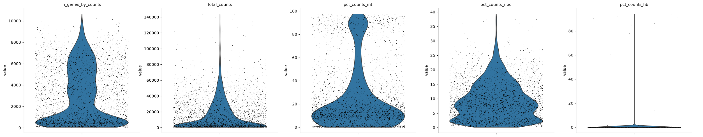
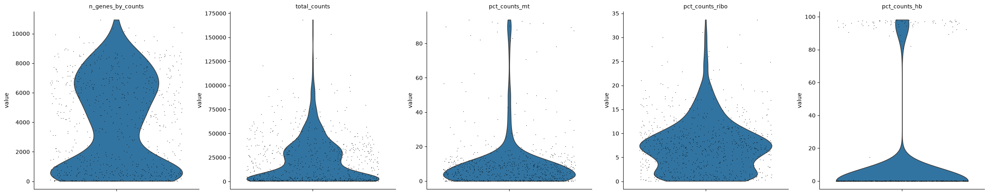
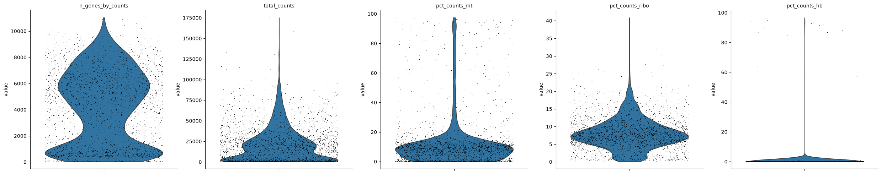
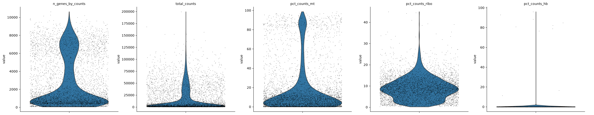
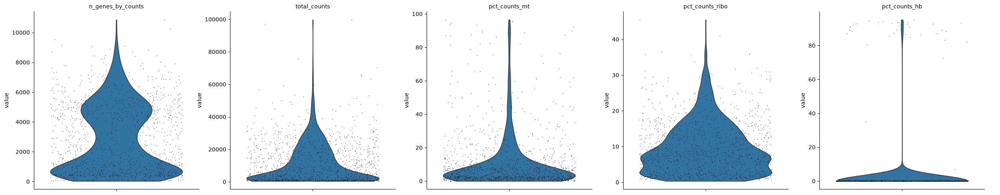
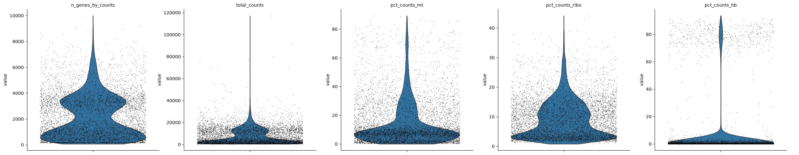
2-2. Doublet Detection
[6]:
for k, _adata in datasets.items():
sc.pp.scrublet(_adata)
sc.pl.scatter(
_adata, x="total_counts", y="n_genes_by_counts",
color="predicted_doublet"
)
datasets[k] = _adata[~_adata.obs["predicted_doublet"], :].copy()
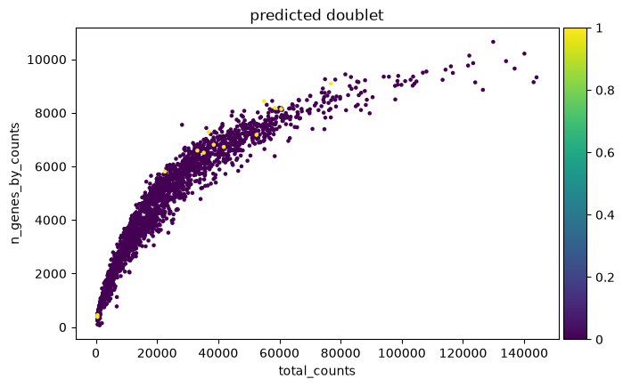
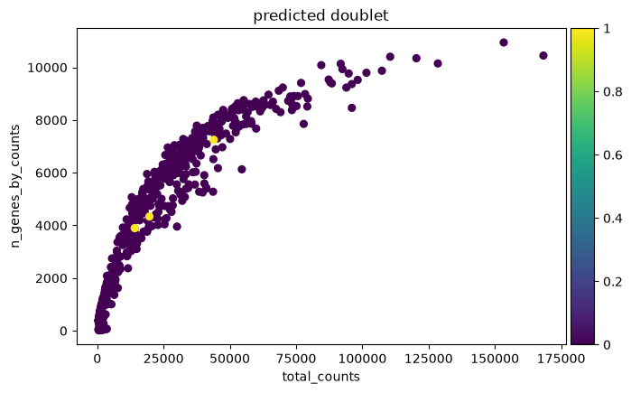
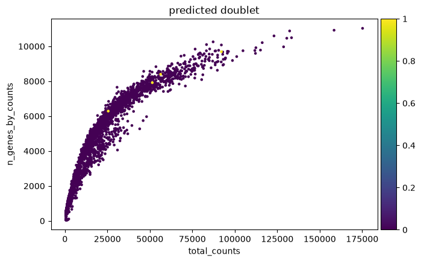
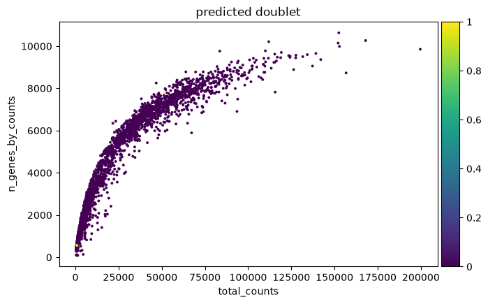
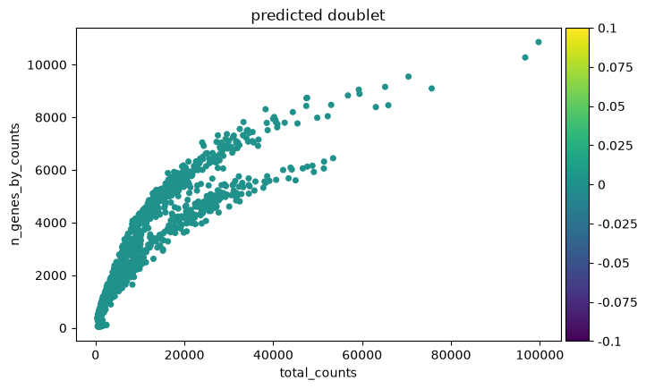
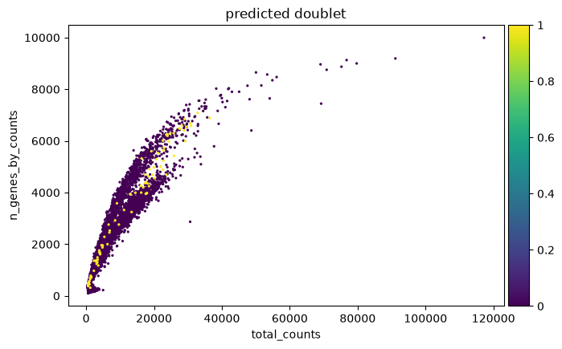
3. Normalization and Concatenation
[7]:
for k, _adata in datasets.items():
_adata.layers["counts"] = _adata.X.copy()
sc.pp.normalize_total(_adata, target_sum=1e4)
sc.pp.log1p(_adata)
datasets[k] = _adata
adata = ad.concat(datasets, label="batch_id")
adata.obs_names_make_unique()
/tmp/ipykernel_3711880/783649504.py:8: UserWarning: Observation names are not unique. To make them unique, call `.obs_names_make_unique`.
adata = ad.concat(datasets, label="batch_id")
4. Dimensionality Reduction and Manifold Embedding
4-1. Feature Selection
[8]:
ad_manifold = adata.copy()
sc.pp.highly_variable_genes(
ad_manifold, min_mean=0.3, max_mean=4.5, min_disp=0.5
)
sc.pl.highly_variable_genes(ad_manifold, show=False)
ad_manifold = ad_manifold[:, ad_manifold.var.highly_variable]
sc.pp.scale(ad_manifold, max_value=10)
/hshare1/ZETTAI_path_WA_slash_home_KARA/home/yokano/miniforge3/lib/python3.14/functools.py:982: UserWarning: Received a view of an AnnData. Making a copy.
return dispatch(args[0].__class__)(*args, **kw)
/hshare1/ZETTAI_path_WA_slash_home_KARA/home/yokano/miniforge3/lib/python3.14/functools.py:982: UserWarning: zero-centering a sparse array/matrix densifies it.
return dispatch(args[0].__class__)(*args, **kw)
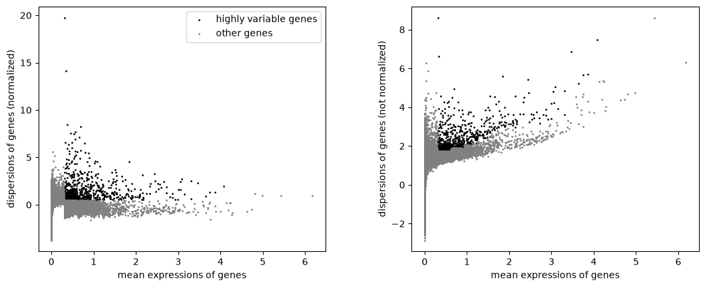
4-2. Dimensionality Reduction
[9]:
sc.tl.pca(ad_manifold, svd_solver="arpack")
4-3. Manifold Embedding
[10]:
sc.pp.neighbors(ad_manifold, n_pcs=50)
sc.tl.umap(ad_manifold)
[11]:
fig, ax = plt.subplots(figsize=(3, 3))
sc.pl.umap(ad_manifold, ax=ax, size=10, show=False)
ax.axis("off");
[12]:
transfer_embedding_info(adata_source=ad_manifold, adata_target=adata, overwrite=True)
del ad_manifold
5. Clustering
[13]:
sc.tl.leiden(adata, resolution=1)
/tmp/ipykernel_3711880/1886685787.py:1: FutureWarning: The `igraph` implementation of leiden clustering is *orders of magnitude faster*. Set the flavor argument to (and install if needed) 'igraph' to use it.
In the future, the default backend for leiden will be igraph instead of leidenalg. To achieve the future defaults please pass: `flavor='igraph'` and `n_iterations=2`. `directed` must also be `False` to work with igraph’s implementation.
sc.tl.leiden(adata, resolution=1)
[14]:
fig, ax = plt.subplots(figsize=(3, 3))
sc.pl.umap(adata, ax=ax, size=10, show=False, color="leiden")
ax.axis("off")
ax.set(title=f"OnlyPoetry ({ENV_SUFFIX})")
ax.legend(
loc="center left", bbox_to_anchor=(1, 0.5), title="Leiden", frameon=False,
ncols=math.ceil(adata.obs["leiden"].nunique() / 10)
)
fig.savefig(
OUTPUT_DIR / f"gbm_umap_{ENV_SUFFIX}.pdf", **kwarg_savefig
)
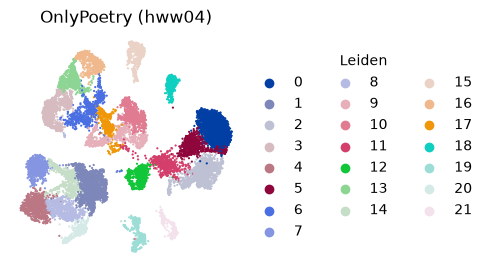
6. Execution Environment Details
[15]:
%%bash
bash .rep_exe_env.sh
============================================================
Execution Environment
============================================================
Timestamp (UTC): 2026-09-29T21:36:57Z
Hostname: hww04
FQDN: hww04i
OS: Red Hat Enterprise Linux 8.8 (Ootpa)
Kernel: 5.14.0-570.55.1.el9_6.x86_64
Architecture: x86_64
CPU model: INTEL(R) XEON(R) GOLD 6542Y
CPU sockets: 2
Cores / socket: 24
Threads / core: 1
Logical CPUs: 48
System memory: 1006.9 GiB
System vendor: XFUSION
System model: 2288H V7
GPU(s): None / nvidia-smi unavailable
============================================================